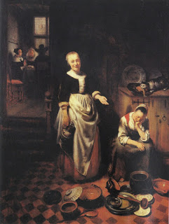

Gittin 38 - Freeing the slaves
A slave was captured, the owner lost hope of his return, and another person comes to redeem him.
If the redemption is in order to free the slave, the slave achieves freedom and does not even need a document of emancipation. Since he was a slave of a Jew, he now becomes a full-fledged Jew and can marry a Jewish woman.
If the redeemer wants to keep him as a slave, he can, and the captor, who owns the work of his hands, can transmit the ownership further.
Slaves should not be redeemed, except for a good cause.
Art: The Idle Servant by Nicolaes Maes